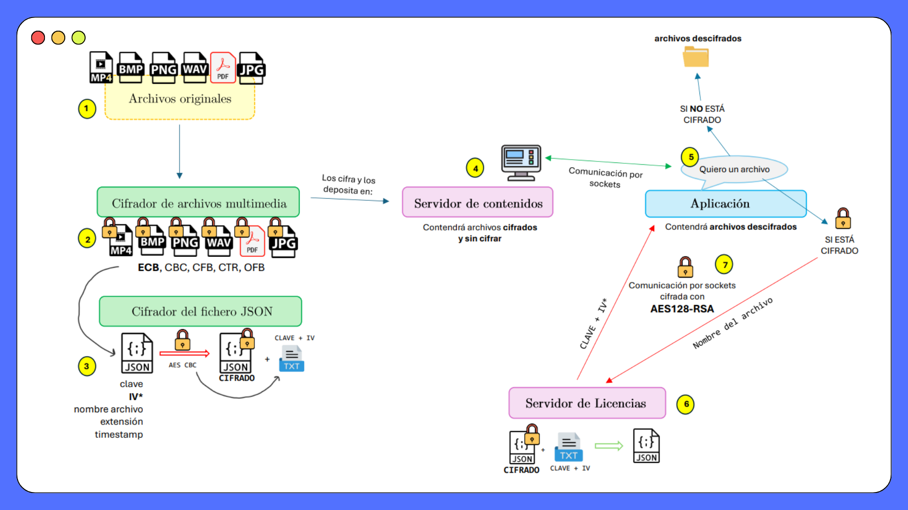
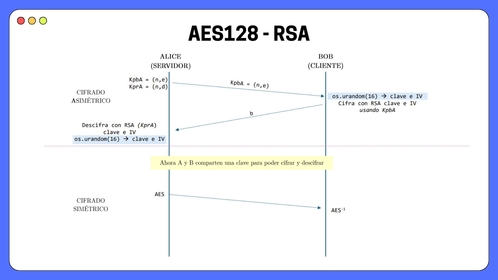
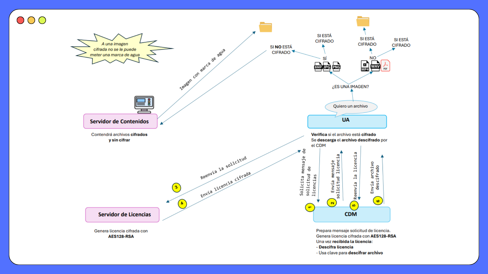

DRM System -
Secure Multimedia Distribution
A full-stack Digital Rights Management platform built in Python, featuring hybrid RSA+AES encryption, license server architecture, client-side watermarking, and a three-tier content delivery pipeline designed around a realistic DRM threat model.
What we built
A complete DRM system for secure distribution of heterogeneous multimedia content (MP4, BMP, PNG, WAV, PDF, JPG). The system enforces access control through a three-tier architecture: a content server that stores encrypted and unencrypted assets, a license server that generates and delivers decryption credentials, and a client application with an embedded Content Decryption Module (CDM) that handles the full request-decrypt-watermark pipeline.
The design mirrors the trust model of real-world DRM deployments - content is never transmitted in plaintext, licenses are always encrypted in transit, and watermarking is applied at the point of consumption rather than at the source.

Original files → multimedia encryptor (AES with 5 modes) → content server. Encrypted JSON metadata with key+IV stored separately.
Part I - Content encryption and basic retrieval
Original files are processed by a multimedia encryptor that applies AES-128 in one of five configurable modes: ECB, CBC, CFB, CTR, or OFB. For each encrypted file, a companion JSON metadata file is generated and independently encrypted using AES-CBC. This metadata bundle holds the AES key, IV, filename, extension, and a timestamp - it is the only artifact the license server needs to reconstruct decryption credentials.
The content server stores both encrypted and unencrypted versions. The client communicates over TCP sockets: if a requested file is unencrypted, it is delivered directly; if encrypted, the client must negotiate a license first.

Server publishes RSA public key → client generates AES key+IV with os.urandom(16), encrypts with KpbA → server decrypts with KprA → shared AES session established.
Part II - Hybrid encryption channel and watermarking
Secure key exchange uses a hybrid AES128-RSA protocol. The server generates an RSA key pair
and publishes the public key KpbA = (n, e). The client generates a 16-byte AES session key
and IV using os.urandom(16), encrypts them with KpbA, and returns the ciphertext.
The server decrypts with its private key (KprA) - both parties now share a symmetric AES key
for all subsequent communication.
Watermarking is applied conditionally at the client: only unencrypted image files (BMP, JPG, PNG) receive a watermark upon delivery. Encrypted files cannot be watermarked before decryption, and non-image formats (MP4, WAV, PDF) are not watermarked. This keeps the security boundary intact - the server never needs to handle decrypted content.

UA → CDM → License Server → Content Server → License Server → CDM (decrypt license) → Content Server → UA (decrypted file + optional watermark).
Part III - CDM integration and license lifecycle
The final architecture introduces a Content Decryption Module (CDM) as a dedicated intermediary layer inside the client. The CDM handles all license negotiation and decryption independently from the user-facing application (UA).
| Step | Actor | Action |
|---|---|---|
| 1 | UA → CDM | Request file by name |
| 2 | CDM → License Server | Send encrypted license request |
| 3 | License Server → Content Server | Forward request, retrieve encrypted license |
| 4 | Content Server → License Server | Return encrypted license (AES128-RSA) |
| 5 | License Server → CDM | Deliver encrypted license |
| 6 | CDM | Decrypt license, extract AES key + IV |
| 7 | Content Server → UA | Deliver decrypted file (+ watermark if image) |
Design decisions
Why we made the cryptographic choices we did
Why hybrid encryption (RSA + AES) instead of pure RSA?
RSA is computationally expensive and has a hard message size limit tied to the key length - it cannot encrypt arbitrary-length content. AES-128 handles bulk data efficiently; RSA is used only for the key encapsulation step, which is a single 16-byte payload. This is the approach used in TLS and every major real-world secure channel. It gives us asymmetric trust establishment with symmetric throughput.
Why AES-CBC for the JSON metadata file, and not ECB?
CBC provides semantic security: identical plaintext blocks produce different ciphertext when given different IVs. ECB was explicitly ruled out because it leaks block-level repetition patterns - a known vulnerability that is especially dangerous for structured data like JSON files, where field names and short values repeat predictably.
Why os.urandom(16) for key and IV generation?
os.urandom draws from the operating system's cryptographic entropy pool, making it suitable for key material. Using Python's random module or any seeded PRNG would be a critical vulnerability in a key exchange protocol, as the output is statistically predictable.
Why watermark at the client, not at the server?
Server-side watermarking would require the server to decrypt content before embedding - temporarily exposing plaintext on the server, which breaks the security boundary. Client-side watermarking after decryption means the server never needs to touch decrypted content. The tradeoff is that the server cannot verify the watermark was applied, but this is acceptable for a course project scope.
Technical stack
Implementation details
Language
Python 3
Symmetric encryption
AES-128 (ECB, CBC, CFB, CTR, OFB)
Asymmetric encryption
RSA (key encapsulation)
Key generation
os.urandom(16)
Transport
Python socket (TCP)
Metadata format
JSON + TXT key file
Watermarking
Image-only, client-side (post-decrypt)
Supported content
MP4, BMP, PNG, WAV, PDF, JPG
Honest assessment
What we would do differently
.txt file on the license server. In production, this material would live in a Hardware Security Module (HSM) or an encrypted key store with access controls. The key file is the single most sensitive artifact in the system.
Resources
Documentation and team
The source code lives in a private repository shared with the team. Architecture documentation, diagrams, and the full technical presentation are available below.
Built with
UPV - ETSI Telecomunicación · Seguridad y Gestión de Derechos Digitales · 2024–25